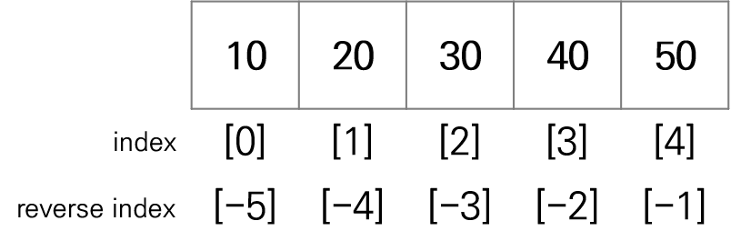

# 리스트 생성1
lst = [1, 2, 3, 4, 5]
print(lst)[1, 2, 3, 4, 5]| 자료구조 | 설명 |
|---|---|
| 리스트(list) | 여러 개의 값을 저장할 수 있는 순차적인 자료구조 |
| 튜플(tuple) | 리스트와 같지만 데이터의 변경을 허용하지 않는 자료구조 |
| 세트(set) | 데이터의 중복을 허용하지 않고, 수학의 집합 연산을 지원하는 자료구조 |
| 딕셔너리(dictionary) | 키(key)와 값(value)의 형태로 데이터를 저장하는 자료구조 |
| 자료구조 | 순서 유지 | 변경 가능 | 중복 허용 | 특징 |
|---|---|---|---|---|
| 리스트(list) | ○ | ○ | ○ | 가장 기본적인 자료구조, 인덱스로 접근 |
| 튜플(tuple) | ○ | × | ○ | 리스트와 유사하지만 불변형(immutable) |
| 세트(set) | × | ○ | × | 중복 제거, 수학적 집합 연산 가능 |
| 딕셔너리(dictionary) | ○ | ○ | △ | 키-값(key-value) 형태로 저장 |
[] 사용하여 리스트를 직접 정의하는 방법[] 안에 원소(element)를 ,로 구분하여 나열함list() 함수를 사용하여 리스트를 생성하는 방법[1, 3.14, 'Hello', True, [11, 12, 13]]+ : 두 리스트를 연결해서 새로운 리스트 생성* : 리스트를 숫자만큼 반복하여 새로운 리스트 생성 - (예) 리스트*숫자* : 리스트의 개별 원소를 분리하여 다른 리스트로 전개 - (예) [*리스트][[1, 2, 3], [1, 2, 3]]
[1, 2, 3, 1, 2, 3][index]를 사용하여 리스트의 특정 위치에 있는 원소에 접근함[(start index):(stop index)]를 사용하여 리스트의 일부 원소를 추출함
list[(start index):(end index)] = iterable를 사용하면 start:end로 지정한 부분이 iterable 객체의 모든 원소로 대체됨
# 리스트 접근 연산자 []를 이중으로 사용할 수 있음
lst = [1, 3.14, "Hello", True, [11, 12, 13]]
print(lst[2])
print(lst[2][0])Hello
H[10, 20]
[30, 40, 50]
[10, 30, 50][10, 20, 3, 40, 50][10, 50]# 슬라이싱을 이용한 원소 추가
lst = [10, 20, 30, 40, 50]
lst[1:1] = [6, 7] # 인덱스 1 위치에 [6, 7]의 원소를 개별적으로 추가
print(lst)[10, 6, 7, 20, 30, 40, 50]# 슬라이싱을 이용한 원소 수정
lst = [10, 20, 30, 40, 50]
lst[1:3] = [6, 7, 8] # 인덱스 1~2 부분을 [6, 7, 8]로 수정
print(lst)[10, 6, 7, 8, 40, 50][[1, 2, 3], [4, 5, 6, 7], [8, 9]]# 2차원 리스트
kor = [80, 82, 75, 95]
eng = [67, 95, 84, 83]
math = [74, 88, 82, 76]
midterm = [kor, eng, math]
print(midterm)[[80, 82, 75, 95], [67, 95, 84, 83], [74, 88, 82, 76]]| 함수 | 설명 |
|---|---|
| append() | - 새로운 값을 기존 리스트의 맨 끝에 추가 |
| extend() | - 새로운 리스트를 기존 리스트에 추가(덧셈 연산과 같은 효과) |
| insert() | - 기존 리스트의 i번째 인덱스에 새로운 값을 추가 - i번째 인덱스를 기준으로 뒤쪽의 인덱스는 하나씩 밀림 |
[1, 2, 3, 4]# 리스트에 한 개의 원소 추가2
# 원본 값 변화 없이 리스트에 한 개의 원소를 추가하려면 전개 연산자 *를 사용하면 됨
lst = [1, 2, 3]
new_lst = [*lst, 4]
print(lst) # lst 원본 값이 변하지 않음
print(new_lst)[1, 2, 3]
[1, 2, 3, 4]# 리스트에 여러 개의 원소 추가
lst = [1, 2, 3]
lst.extend([11, 12]) # 실행 결과로 아무것도 출력하지 않음
print(lst) # lst1 원본 값이 변함[1, 2, 3, 11, 12]# extend() 함수와 리스트 연결 연산자 +의 차이
lst1 = [1, 2, 3]
lst2 = [11, 12, 13]
lst1 + lst2 # 실행 결과가 출력됨
print(lst1) # lst1 원본 값이 변하지 않음
print(lst2) # lst2 원본 값이 변하지 않음[1, 2, 3]
[11, 12, 13]# 특정 위치에 한 개의 원소 추가
lst = [1, 2, 3]
lst.insert(0, 100) # 실행 결과로 아무것도 출력하지 않음
print(lst) # lst 원본 값이 변함[100, 1, 2, 3]# 특정 위치에 여러 개의 원소 추가 : 슬라이싱을 이용
lst = [1, 2, 3]
lst[1:1] = [11, 12] # 인덱스 1의 위치에 리스트 [11, 12]의 원소를 개별적으로 삽입
print(lst) # lst 원본 값이 변함[1, 11, 12, 2, 3]| 함수 | 설명 |
|---|---|
| pop() | - 특정 인덱스 값을 삭제하고 그 값을 반환 - 인덱스를 생략하면 마지막 원소를 삭제 |
| del 키워드 | - 특정 인덱스 값을 삭제 - 리스트 객체 자체를 삭제 가능함 |
| remove() | - 리스트에서 첫 번째로 일치하는 값을 삭제 - 값으로 삭제하므로 인덱스를 사용하지 않음 |
| clear() | - 리스트의 모든 원소를 삭제 |
# 특정 인덱스 값 삭제1
lst = [1, 2, 3, 4, 5]
result = lst.pop(3) # 실행 결과로 삭제한 값을 반환
print(lst) # lst 원본 값이 변함
print(result)[1, 2, 3, 5]
4# 특정 인덱스 값 삭제2
lst = [1, 2, 3, 4, 5]
result = lst.pop() # 인덱스를 생략하면 마지막 원소를 삭제 후 반환
print(lst) # lst 원본 값이 변함
print(result)[1, 2, 3, 4]
5[1, 2, 3, 5][1, 2, 3, 5]# 일치하는 값 삭제2
lst = [1, 2, 3, 1, 4, 5, 1, 6, 7]
lst.remove(1) # 첫 번째로 일치하는 값만 삭제됨
print(lst) # lst 원본 값이 변함[2, 3, 1, 4, 5, 1, 6, 7]| 함수 | 설명 |
|---|---|
| reverse() | - 리스트 원소를 역순으로 재배열 |
| sort() | - 리스트 원소를 오름차순(default)으로 정렬 - 내림차순으로 정렬하려면 reverse=True로 설정 |
# 리스트 역순 재배열
lst = [52, 273, 103, 32, 275, 1, 7]
lst.reverse() # 실행 결과로 아무것도 출력하지 않음
print(lst) # lst 원본 값이 변함[7, 1, 275, 32, 103, 273, 52]# 리스트 정렬
lst = [52, 273, 103, 32, 275, 1, 7]
lst.sort() # 실행 결과로 아무것도 출력하지 않음, 오름차순 정렬
print(lst) # lst 원본 값이 변함
lst.sort(reverse=True) # 내림차순 정렬
print(lst) # lst 원본 값이 변함[1, 7, 32, 52, 103, 273, 275]
[275, 273, 103, 52, 32, 7, 1]| 함수 | 설명 |
|---|---|
| count() | 리스트 내부에 특정 값이 몇 번 나타나는지 개수를 반환 |
| index() | 리스트 내부에 특정 값의 첫 번째 인덱스를 반환하며, 없으면 오류 발생 |
| in 연산자 | 리스트 내부에 특정 값이 있다면 True, 없다면 False를 반환 |
| 함수 | 설명 |
|---|---|
| len() | 리스트 원소의 개수(리스트 길이) 반환 |
| sum() | 리스트 원소의 합계 반환 |
| max() | 리스트 원소 중 최대값 반환 |
| min() | 리스트 원소 중 최소값 반환 |
[식 for 변수 in 반복범위 if 조건식]
[x for x in range(10)][0, 1, 2, 3, 4, 5, 6, 7, 8, 9][0, 1, 2, 3, 4, 5, 6, 7, 8, 9]## 짝수만 저장 (필터링, if 문과 함께 사용)
# 일반적인 반복문 + 리스트
result1 = []
for i in range(10):
if i % 2 == 0:
result1.append(i)
print(result1)[0, 2, 4, 6, 8]## 짝수만 저장 (필터링, if 문과 함께 사용)
# 리스트 컴프리헨션
result2 = [i for i in range(10) if i % 2 == 0]
print(result2)[0, 2, 4, 6, 8]## 두 개의 문자열 조합하여 새로운 리스트 생성 (중첩 반복문)
# 일반적인 반복문 + 리스트
word1 = "Hello"
word2 = "World"
result1 = []
for i in word1:
for j in word2:
result1.append(i+j)
print(result1)['HW', 'Ho', 'Hr', 'Hl', 'Hd', 'eW', 'eo', 'er', 'el', 'ed', 'lW', 'lo', 'lr', 'll', 'ld', 'lW', 'lo', 'lr', 'll', 'ld', 'oW', 'oo', 'or', 'ol', 'od']## 두 개의 문자열 조합하여 새로운 리스트 생성 (중첩 반복문)
# 리스트 컴프리헨션
word1 = "Hello"
word2 = "World"
result2 = [i+j for i in word1 for j in word2]
print(result2)['HW', 'Ho', 'Hr', 'Hl', 'Hd', 'eW', 'eo', 'er', 'el', 'ed', 'lW', 'lo', 'lr', 'll', 'ld', 'lW', 'lo', 'lr', 'll', 'ld', 'oW', 'oo', 'or', 'ol', 'od']# 리스트 컴프리헨션 (필터링 + 중첩 반복문)
case1 = ["A", "B", "C"]
case2 = ["D", "E", "A"]
result = [i + j for i in case1 for j in case2 if not(i==j)]
print(result)['AD', 'AE', 'BD', 'BE', 'BA', 'CD', 'CE', 'CA']## 리스트의 각 원소를 대문자, 소문자, 길이로 변환하여 이차원 리스트 생성 (이차원 리스트)
# 일반적인 반복문 + 리스트
words = "The quick brown fox jumps over the lazy dog".split()
word_info1 = []
for w in words:
word_info1.append([w.upper(), w.lower(), len(w)])
word_info1[['THE', 'the', 3],
['QUICK', 'quick', 5],
['BROWN', 'brown', 5],
['FOX', 'fox', 3],
['JUMPS', 'jumps', 5],
['OVER', 'over', 4],
['THE', 'the', 3],
['LAZY', 'lazy', 4],
['DOG', 'dog', 3]]## 리스트의 각 원소를 대문자, 소문자, 길이로 변환하여 이차원 리스트 생성 (이차원 리스트)
# 리스트 컴프리헨션
words = "The quick brown fox jumps over the lazy dog".split()
word_info2 = [[w.upper(), w.lower(), len(w)] for w in words]
word_info2[['THE', 'the', 3],
['QUICK', 'quick', 5],
['BROWN', 'brown', 5],
['FOX', 'fox', 3],
['JUMPS', 'jumps', 5],
['OVER', 'over', 4],
['THE', 'the', 3],
['LAZY', 'lazy', 4],
['DOG', 'dog', 3]]# [주의] 반복문에서 대괄호의 위치에 따라 리스트의 구조가 달라짐
case1 = ["A", "B", "C"]
case2 = ["1", "2", "3"]
# 일차원 리스트, 앞의 for 문이 먼저 실행됨
result1 = [i + j for i in case1 for j in case2]
print(result1)
# 이차원 리스트, 뒤의 for 문이 바깥쪽에서 먼저 실행됨
result2 = [[i + j for i in case1] for j in case2]
print(result2)['A1', 'A2', 'A3', 'B1', 'B2', 'B3', 'C1', 'C2', 'C3']
[['A1', 'B1', 'C1'], ['A2', 'B2', 'C2'], ['A3', 'B3', 'C3']]()를 사용하여 튜플을 직접 정의하는 방법() 안에 원소(element)를 ,로 구분하여 나열함()을 생략할 수도 있지만, 원소가 하나인 경우에는 (값,)처럼 반드시 ,를 포함해야 함tuple() 함수를 사용하여 튜플을 생성하는 방법(1, 3.14, 'Hello', True, [11, 12, 13], (21, 22))+ : 두 튜플을 연결해서 새로운 튜플 생성* : 튜플을 숫자만큼 반복하여 새로운 튜플 생성 - (예) 튜플*숫자* : 튜플의 개별 원소를 분리하여 다른 튜플 전개 - (예) (*튜플)((1, 2, 3, 4, 5), (1, 2, 3, 4, 5))
(1, 2, 3, 4, 5, 1, 2, 3, 4, 5)[index]를 사용하여 튜플의 특정 위치에 있는 원소에 접근함[(start index):(stop index)]를 사용하여 튜플의 일부 원소를 추출함
(1, 2)
(3, 4, 5)
(1, 3, 5)| 함수 | 설명 |
|---|---|
| count() | 튜플 내부에 특정 값이 몇 번 나타나는지 개수를 반환 |
| index() | 튜플 내부에 특정 값의 첫 번째 인덱스를 반환하며, 없으면 오류 발생 |
| in 연산자 | 튜플 내부에 특정 값이 있다면 True, 없다면 False를 반환 |
| len() | 튜플 원소의 개수(튜플 길이) 반환 |
| sum() | 튜플 원소의 합계 반환 |
| max() | 튜플 원소 중 최대값 반환 |
| min() | 튜플 원소 중 최소값 반환 |
{}를 사용하여 세트를 직접 정의하는 방법{} 안에 원소(element)를 ,로 구분하여 나열함set() 함수를 사용하여 세트를 생성하는 방법set() 함수를 사용해야 함# 세트 생성3 : 세트는 해시 가능한(immutable) 자료형을 저장할 수 있음
st = {1, 3.14, "Hello", True, (1, 2, 3), "Hello", 1, 1, 1}
print(st){1, 3.14, 'Hello', (1, 2, 3)}# 세트 생성5 : iterable 객체 사용
st1 = set([1, 2, 3, 1, 1, 4])
st2 = set((1, 2, 3, 1, 1, 4))
print(st1)
print(st2){1, 2, 3, 4}
{1, 2, 3, 4}* : 세트의 개별 원소를 분리하여 다른 세트로 전개 - (예) {*세트}{1, 2, 3, 4}
[11, 12, 1, 2, 3, 4, 20]| 연산 | 연산자 | 함수 |
|---|---|---|
| 합집합 | | | union() |
| 교집합 | & | intersection() |
| 차집합 | - | difference() |
| 대칭차집합 | ^ | symmetric_difference() |
| 부분집합 여부 | <= | issubset() |
# 세트 연산1
A = {1, 2, 3}
B = {3, 4, 5}
print(A | B) # 합집합
print(A & B) # 교집합
print(A - B) # 차집합
print(A ^ B) # 대칭차집합
print(A <= B) # 부분집합 여부{1, 2, 3, 4, 5}
{3}
{1, 2}
{1, 2, 4, 5}
False# 세트 연산2
A = {1, 2, 3}
B = {3, 4, 5}
print(A.union(B))
print(A.intersection(B))
print(A.difference(B))
print(A.symmetric_difference(B))
print(A.issubset(B)){1, 2, 3, 4, 5}
{3}
{1, 2}
{1, 2, 4, 5}
False# 세트 연산3 : 여러 개의 세트를 연쇄적으로 한 번에 연산 가능
A = {1, 2, 3}
B = {3, 4, 5}
C = {5, 6, 7}
# 연산자 사용
print(A | B | C)
print(A & B & C)
# 메소드 사용
print(A.union(B, C))
print(A.intersection(B, C)){1, 2, 3, 4, 5, 6, 7}
set()
{1, 2, 3, 4, 5, 6, 7}
set()| 함수 | 설명 |
|---|---|
| add() | - 새로운 값을 세트에 추가 |
| update() | - 여러 개 값을 세트에 추가 |
| pop() | - 임의의 값을 삭제하고 그 값을 반환 - 어떤 값을 삭제할지 예측 불가능 |
| remove() | - 세트에서 일치하는 값을 삭제 - 일치하는 값이 없으면 오류가 발생함 |
| discard() | - 세트에서 일치하는 값을 삭제 - 일치하는 값이 없어도 오류가 발생하지 않음 |
| clear() | - 세트의 모든 원소를 삭제 |
| in 연산자 | 세트 내부에 특정 값이 있다면 True, 없다면 False를 반환 |
{1, 2, 3, 6}# 세트에 여러 개의 원소 추가
st = {1, 2, 3}
st.update([1, 2, 6]) # 리스트 사용
print(st)
st.update((1, 7)) # 튜플 사용
print(st)
st.update({8, 9}) # 세트 사용
print(st){1, 2, 3, 6}
{1, 2, 3, 6, 7}
{1, 2, 3, 6, 7, 8, 9}# 임의의 원소 삭제
st = {1, 2, 3}
result = st.pop() # 임의의 원소를 삭제 후 반환
print(st) # st 원본 값이 변함
print(result){2, 3}
1{1, 2, 3}{key: value}를 사용하여 딕셔너리를 직접 정의하는 방법{} 안에 여러 개의 key: value 쌍을 ,로 구분하여 나열함dict() 함수를 사용하여 딕셔너리를 생성하는 방법zip() 함수를 이용하여 여러 개의 리스트나 튜플을 병렬로 묶어 키-값 쌍의 형태로 구성할 수 있음enumerate() 함수를 이용하여 인덱스를 키로, 원소를 값으로 하여 쌍으로 묶어 딕셔너리를 생성할 수 있음{'a': 4, 'b': 5, 'c': 3}{'x': 100, 'y': 200}# 딕셔너리 생성5 : zip() 함수 사용
keys = ['name', 'age', 'city']
values = ['Alice', 28, 'Jeonju']
dct = dict(zip(keys, values))
print(dct){'name': 'Alice', 'age': 28, 'city': 'Jeonju'}# 딕셔너리 생성6 : enumerate() 함수 사용
fruits = ['apple', 'banana', 'cherry']
dct = dict(enumerate(fruits))
print(dct){0: 'apple', 1: 'banana', 2: 'cherry'}# 키를 이용한 값 접근
info = {'name': 'Alice', 'age': 28, 'city': 'Jeonju'}
print(info['name'])
print(info['age'])Alice
28# 딕셔너리는 가변형 객체이므로 키를 이용한 수정이 가능함
info = {'name': 'Alice', 'age': 28, 'city': 'Jeonju'}
info['city'] = 'Iksan'
print(info){'name': 'Alice', 'age': 28, 'city': 'Iksan'}# 새로운 키-값 쌍 추가
info = {'name': 'Alice', 'age': 28, 'city': 'Jeonju'}
info['email'] = 'alice123@gmail.com'
print(info){'name': 'Alice', 'age': 28, 'city': 'Jeonju', 'email': 'alice123@gmail.com'}| 함수 | 설명 |
|---|---|
| keys() | 딕셔너리의 모든 키를 반환(dict_keys 객체) |
| values() | 딕셔너리의 모든 값을 반환(dict_values 객체) |
| items() | (키, 값) 쌍을 튜플 형태로 반환(dict_items 객체) |
| get() | 지정한 키의 값을 반환하며, 없으면 None 반환 |
| in 연산자 | 특정 키가 딕셔너리에 있다면 True, 없다면 False 반환 |
['name', 'age', 'city']['Alice', 28, 'Jeonju'][('name', 'Alice'), ('age', 28), ('city', 'Jeonju')]# 키를 이용한 값 조회
info = {'name': 'Alice', 'age': 28, 'city': 'Jeonju'}
print(info.get('name'))
print(info.get('email'))Alice
None# 특정 키 찾기
info = {'name': 'Alice', 'age': 28, 'city': 'Jeonju'}
print('age' in info)
print('email' in info)True
False| 함수 | 설명 |
|---|---|
| update() | 다른 딕셔너리나 키워드 인수를 이용하여 원소를 추가 및 수정 |
| pop() | 특정 키의 값을 삭제하고 그 값을 반환하며, 키가 없으면 오류 발생 |
| popitem() | 마지막 (키, 값) 쌍을 삭제하고 반환 |
| del 키워드 | 특정 키의 원소를 삭제하며, 키가 없으면 오류 발생 |
| clear() | 딕셔너리의 모든 원소를 삭제 |
# 원소 추가 및 수정1
info = {'name': 'Alice', 'age': 28}
info.update({'age': 29, 'city': 'Jeonju'})
print(info){'name': 'Alice', 'age': 29, 'city': 'Jeonju'}{'name': 'Alice', 'age': 29, 'city': 'Jeonju'}# 특정 키의 값 삭제1
info = {'name': 'Alice', 'age': 28, 'city': 'Jeonju'}
age = info.pop('age')
print(info)
print(age){'name': 'Alice', 'city': 'Jeonju'}
28# 마지막 (키, 값) 쌍 삭제
info = {'name': 'Alice', 'age': 28, 'city': 'Jeonju'}
last_item = info.popitem()
print(info)
print(last_item){'name': 'Alice', 'age': 28}
('city', 'Jeonju'){'name': 'Alice', 'city': 'Jeonju'}